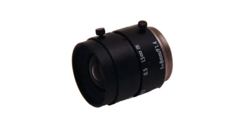
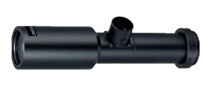
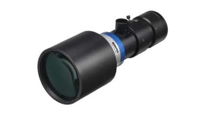

1. 개요
- 들어오는 빛의 초점을 모아 장면을 확대하는 장치
- 렌즈는 카메라가 외부 세계를 선명하게 볼 수 있게 해줌
2. 렌즈 관련 용어
- 화각 (AoV)
- 시야 (FoV)
- 물체 거리
- 초점 거리
- 조리개 및 F-Stop
렌즈를 통해 볼 수 있는 영역의 각도 범위(도 단위)를 나타냄
AoV는 호환되는 센서 크기를 사용하면서, 렌즈를 무한대로 초점을 맞춰서 파생되는 모든 렌즈의 사양
주어진 렌즈와 센서 크기에 대해 AoV는 일정
Field of View는 렌즈를 통해 볼 수 있는 영역의 직사각형 범위를 말함
FoV는 초점 거리와 물체 거리에 따라 달라짐
FoV는 AoV의 경우 렌즈를 무한대로 초점을 맞추는 것과는 반대로 특정 초점 거리에서 캡처되는 것을 설명
물체 거리는 렌즈와 대상 물체 사이의 작동 거리 (Working Distance)
초점 거리는 렌즈와 초점 사이의 거리 (Focal Length)
초점이 센서에 있으면 이미지에 초점이 맞춰짐
조리개는 센서에 도달하는 빛의 양을 제어하는 렌즈의 개구부
조리개의 크기는 F-Stop 값으로 측정
F-Stop 값이 작을 수록 조리개가 더 많이 개방되는 것을 의미함

3. 렌즈의 종류
① 엔토센트릭 렌즈 (Entocentric Lens)
- 이 렌즈는 초점 거리가 고정되어 있으며, 머신 비전 카메라에 사용되는 가장 일반적인 렌즈

② 매크로 렌즈 (Macro Lens)
- 매크로 렌즈는 고배율을 달성하도록 설계되었으며, 일반적으로 0.5x ~ 10x의 배율 범위에서 작동

③ 텔레센트릭 렌즈 (Telecentric Lens)
- 텔레센트릭 렌즈는 이미징 각도가 없으며, 수직 뷰를 생성
